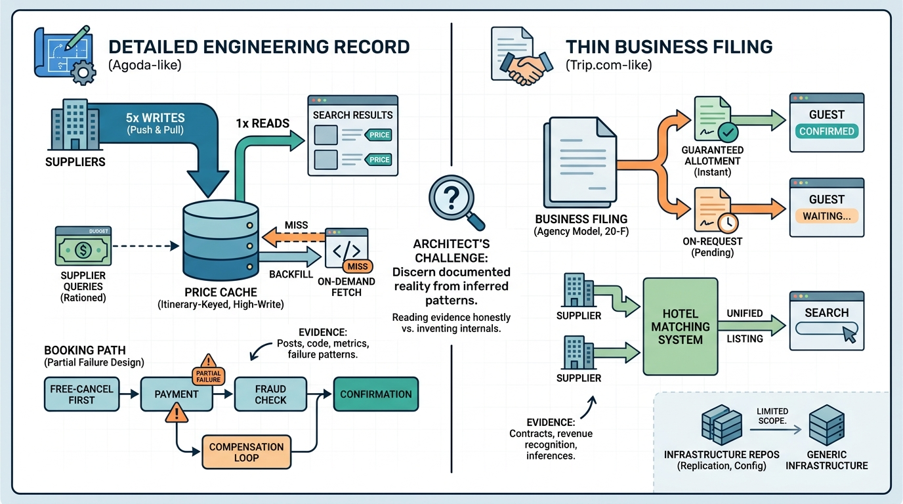

Part X — PRACTICE: How Others Built It
Agoda and Trip.com: Asian OTAs at Scale

Image generated by Google Gemini (gemini-3-pro-image-preview)
Part X — PRACTICE: How Others Built It

Image generated by Google Gemini (gemini-3-pro-image-preview)